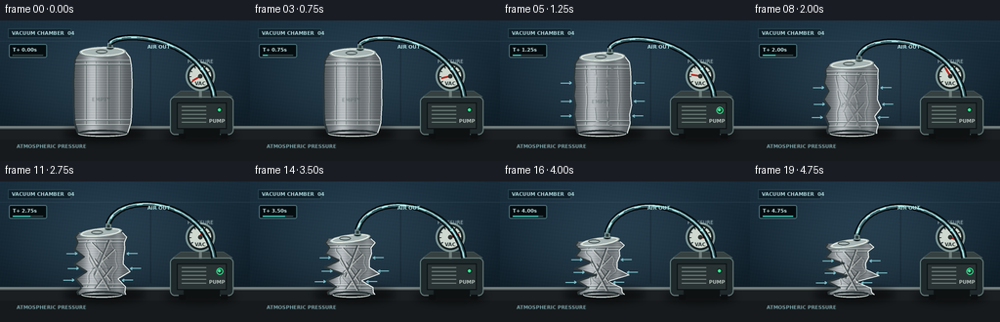
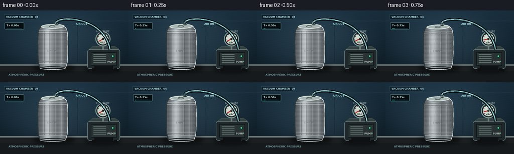
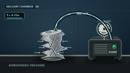

CODING AGENTS AS PIXEL WORLD MODELS
traex/GPT-5.6-Sol · phygen_017
点击播放 · 原生 RGB 像素
逐轮保存的候选
回放视频、检查图与代码变化。
每份候选均可单独播放。实际图片检查记录在下方工具轨迹中。
候选 01播放与检查图
点击播放 · 原生 RGB 像素


展开代码变化
--- 上一保存版本
+++ 本次保存版本
@@ -0,0 +1,261 @@
+from pathlib import Path
+import math
+import numpy as np
+from PIL import Image, ImageDraw, ImageFont, ImageFilter, ImageChops
+import artifact_io
+
+W, H, N = 256, 144, 20
+S = 4
+WW, HH = W*S, H*S
+HERE = Path(__file__).resolve().parent
+rng = np.random.default_rng(17017)
+
+try:
+ FONT = ImageFont.truetype('/usr/share/fonts/truetype/dejavu/DejaVuSans.ttf', 5*S)
+ FONT_B = ImageFont.truetype('/usr/share/fonts/truetype/dejavu/DejaVuSans-Bold.ttf', 5*S)
+ FONT_T = ImageFont.truetype('/usr/share/fonts/truetype/dejavu/DejaVuSans-Bold.ttf', 7*S)
+except Exception:
+ FONT = FONT_B = FONT_T = ImageFont.load_default()
+
+def scpt(p): return (int(round(p[0]*S)), int(round(p[1]*S)))
+def scpoly(points): return [scpt(p) for p in points]
+def smooth(x):
+ x = max(0.0, min(1.0, x)); return x*x*(3-2*x)
+
+def bezier(p0,p1,p2,p3,n=80):
+ out=[]
+ for t in np.linspace(0,1,n):
+ q=1-t
+ out.append((q**3*p0[0]+3*q*q*t*p1[0]+3*q*t*t*p2[0]+t**3*p3[0],
+ q**3*p0[1]+3*q*q*t*p1[1]+3*q*t*t*p2[1]+t**3*p3[1]))
+ return out
+
+def dashed_path(draw, pts, phase, color, width=1.2, dash=6, gap=6):
+ # draw short segments by point-index, enough for a smoothly sampled hose
+ period=dash+gap
+ for j in range(len(pts)-1):
+ pos=(j+phase)%period
+ if pos < dash:
+ draw.line([scpt(pts[j]),scpt(pts[j+1])], fill=color, width=max(1,int(width*S)))
+
+def can_geometry(p):
+ # The base stays planted while the top descends under an atmospheric-pressure crush.
+ bottom=115.7
+ top=32.0 + 31.5*(p**0.82)
+ vs=np.array([0,.07,.16,.27,.39,.51,.63,.75,.87,.96,1.0])
+ base=np.array([23.5,27.8,29.3,29.7,29.9,29.7,29.8,29.4,28.8,26.6,25.3])
+ # Nonuniform alternating dents produce recognizable buckling instead of simple scaling.
+ ld=np.array([2,3,5,8,17,8,21,9,15,4,2],float)
+ rd=np.array([2,3,15,8,20,10,7,21,11,5,2],float)
+ shift=np.array([-2,-1,2,-3,4,-4,5,-3,2,0,0],float)
+ amp=p**1.20
+ cx=105.0 - 1.5*p
+ ys=top+vs*(bottom-top)
+ cxs=cx+shift*amp
+ left=cxs-(base-ld*amp)
+ right=cxs+(base-rd*amp)
+ # Small deterministic corrugation appears as the wall gives way.
+ zig=np.sin(vs*9*math.pi+0.4)*1.5*amp
+ left-=zig; right-=0.65*zig
+ points=list(zip(left,ys))+list(zip(right[::-1],ys[::-1]))
+ return np.c_[left,ys], np.c_[right,ys], points, top, bottom, cx
+
+def ellipse_poly(cx,cy,rx,ry,tilt=0,n=50):
+ ct,st=math.cos(tilt),math.sin(tilt)
+ pts=[]
+ for a in np.linspace(0,2*math.pi,n,endpoint=False):
+ x,y=rx*math.cos(a),ry*math.sin(a)
+ pts.append((cx+x*ct-y*st,cy+x*st+y*ct))
+ return pts
+
+def draw_arrow(draw, a, b, color, width=1.2, head=3.0):
+ ax,ay=a; bx,by=b
+ draw.line([scpt(a),scpt(b)],fill=color,width=max(1,int(width*S)))
+ ang=math.atan2(by-ay,bx-ax)
+ for sgn in (-1,1):
+ q=(bx-head*math.cos(ang+sgn*.55),by-head*math.sin(ang+sgn*.55))
+ draw.line([scpt(b),scpt(q)],fill=color,width=max(1,int(width*S)))
+
+def render(k):
+ t=k/(N-1)
+ # Delay the dramatic collapse briefly, then accelerate; a final settling phase remains.
+ p=smooth(max(0,(t-.10)/.90))
+ p=p**0.90
+
+ # Cinematic cool laboratory background, with a gentle fixed vignette.
+ yy,xx=np.mgrid[0:HH,0:WW]
+ Y=yy/S; X=xx/S
+ wall=np.zeros((HH,WW,3),dtype=np.float32)
+ wall[:,:,0]=17+14*(1-Y/H)
+ wall[:,:,1]=29+21*(1-Y/H)
+ wall[:,:,2]=37+27*(1-Y/H)
+ glow=np.exp(-((X-111)**2/(2*82**2)+(Y-60)**2/(2*58**2)))
+ wall += glow[:,:,None]*np.array([12,19,23])
+ vign=np.clip(((X-W/2)/(W/2))**2+((Y-H/2)/(H/2))**2,0,1)
+ wall-=vign[:,:,None]*8
+ # Stable fine sensor grain prevents sterile flat fills.
+ grain=(np.sin(X*2.13+Y*.31)+np.sin(Y*1.71-X*.19))*0.7
+ wall+=grain[:,:,None]
+ im=Image.fromarray(np.uint8(np.clip(wall,0,255)),'RGB')
+ d=ImageDraw.Draw(im,'RGBA')
+
+ # Wall seams and lab identification panel.
+ d.line([scpt((0,21)),scpt((256,21))],fill=(103,130,140,30),width=S)
+ d.line([scpt((154,21)),scpt((154,104))],fill=(7,17,23,85),width=S)
+ d.rectangle([scpt((8,8)),scpt((73,18))],fill=(7,18,24,150),outline=(81,126,139,90),width=S)
+ d.text(scpt((12,10)), 'VACUUM CHAMBER 04', font=FONT_B, fill=(170,213,218,205))
+
+ # Bench, beveled front edge, and cast shadow.
+ d.rectangle([scpt((0,108)),scpt((256,144))],fill=(27,31,34,255))
+ d.rectangle([scpt((0,108)),scpt((256,111))],fill=(91,101,102,255))
+ d.line([scpt((0,109)),scpt((256,109))],fill=(184,196,190,110),width=S)
+ d.rectangle([scpt((0,122)),scpt((256,144))],fill=(19,22,24,150))
+ shadow=Image.new('RGBA',(WW,HH),(0,0,0,0)); sd=ImageDraw.Draw(shadow)
+ sd.ellipse([scpt((65,108)),scpt((149,124))],fill=(0,0,0,145))
+ sd.ellipse([scpt((168,111)),scpt((243,125))],fill=(0,0,0,130))
+ shadow=shadow.filter(ImageFilter.GaussianBlur(4*S)); im=Image.alpha_composite(im.convert('RGBA'),shadow)
+ d=ImageDraw.Draw(im,'RGBA')
+
+ # Vacuum pump body at right.
+ d.rounded_rectangle([scpt((174,78)),scpt((239,117))],radius=5*S,fill=(31,41,44,255),outline=(105,127,126,255),width=S)
+ d.rectangle([scpt((181,84)),scpt((232,111))],fill=(42,51,52,255),outline=(12,17,19,230),width=S)
+ d.polygon(scpoly([(177,78),(185,72),(229,72),(238,78)]),fill=(54,65,65,255),outline=(116,138,133,230))
+ d.rectangle([scpt((188,111)),scpt((225,118))],fill=(13,17,18,255))
+ d.rectangle([scpt((183,116)),scpt((190,121))],fill=(12,14,15,255))
+ d.rectangle([scpt((226,116)),scpt((233,121))],fill=(12,14,15,255))
+ # Pump cooling grille and status light.
+ for gy in range(88,108,4):
+ d.line([scpt((186,gy)),scpt((211,gy))],fill=(112,130,126,130),width=S)
+ d.ellipse([scpt((222,89)),scpt((227,94))],fill=(18,56,45,255),outline=(7,12,11,255))
+ d.ellipse([scpt((223,90)),scpt((226,93))],fill=(59,238,151,230))
+ d.text(scpt((214,100)),'PUMP',font=FONT_B,fill=(184,197,190,170))
+
+ # Gauge and animated needle; near-full vacuum by the last frames.
+ gc=(205,57); gr=14
+ d.line([scpt((205,72)),scpt((205,79))],fill=(111,126,123,255),width=3*S)
+ d.ellipse([scpt((gc[0]-gr-1,gc[1]-gr-1)),scpt((gc[0]+gr+1,gc[1]+gr+1))],fill=(20,28,30,255),outline=(125,150,148,255),width=2*S)
+ d.ellipse([scpt((gc[0]-gr+2,gc[1]-gr+2)),scpt((gc[0]+gr-2,gc[1]+gr-2))],fill=(207,216,207,255),outline=(31,42,43,255),width=S)
+ for j in range(9):
+ a=math.radians(145+250*j/8)
+ r1,r2=9.3,11.0
+ d.line([scpt((gc[0]+r1*math.cos(a),gc[1]+r1*math.sin(a))),scpt((gc[0]+r2*math.cos(a),gc[1]+r2*math.sin(a)))],fill=(28,38,38,255),width=S)
+ d.text(scpt((199.5,61.5)),'VAC',font=FONT_B,fill=(39,52,50,255))
+ ang=math.radians(150+242*(smooth(t)*.96))
+ ne=(gc[0]+9.5*math.cos(ang),gc[1]+9.5*math.sin(ang))
+ d.line([scpt(gc),scpt(ne)],fill=(189,42,33,255),width=2*S)
+ d.ellipse([scpt((202.8,54.8)),scpt((207.2,59.2))],fill=(44,50,47,255))
+ d.text(scpt((192,39)),'PRESSURE',font=FONT,fill=(167,192,192,170))
+
+ # Can geometry and metallic masked body.
+ left,right,bodypts,top,bottom,cx=can_geometry(p)
+ mask=Image.new('L',(WW,HH),0); md=ImageDraw.Draw(mask)
+ md.polygon(scpoly(bodypts),fill=255)
+ # metallic anisotropic gradient, fixed in lab coordinates plus fine brushed bands
+ arr=np.zeros((HH,WW,4),dtype=np.uint8)
+ rel=(X-cx)/31.0
+ shine=112 + 76*np.exp(-((rel+0.35)/.27)**2) + 28*np.exp(-((rel-.55)/.14)**2) - 33*np.abs(rel)
+ vband=7*np.sin(Y*2.45)+4*np.sin(Y*7.1)
+ arr[:,:,0]=np.clip(shine+vband+7,55,228)
+ arr[:,:,1]=np.clip(shine+vband+13,63,235)
+ arr[:,:,2]=np.clip(shine+vband+16,68,239)
+ arr[:,:,3]=np.array(mask)
+ metal=Image.fromarray(arr,'RGBA')
+ im=Image.alpha_composite(im,metal)
+ d=ImageDraw.Draw(im,'RGBA')
+ # silhouette edge, emphasized pressure-buckled creases
+ d.line(scpoly(list(map(tuple,left))),fill=(44,55,58,240),width=2*S,joint='curve')
+ d.line(scpoly(list(map(tuple,right))),fill=(230,239,235,190),width=S,joint='curve')
+
+ # Body details clipped through a separate overlay.
+ det=Image.new('RGBA',(WW,HH),(0,0,0,0)); dd=ImageDraw.Draw(det,'RGBA')
+ height=bottom-top
+ # former vertical ribs bend increasingly sideways
+ for off,alpha in [(-18,90),(-8,72),(5,76),(17,60)]:
+ pts=[]
+ for q in np.linspace(.1,.9,28):
+ y=top+q*height
+ bend=p*(4*math.sin(q*3*math.pi+off*.2)+2*math.sin(q*8*math.pi))
+ pts.append((cx+off*(1-.42*p)+bend,y))
+ dd.line(scpoly(pts),fill=(245,249,244,alpha),width=S)
+ dd.line(scpoly([(x+1.0,y) for x,y in pts]),fill=(37,48,51,alpha),width=S)
+ # Horizontal rings remain diagnostic of an aluminum beverage can.
+ for q in (.11,.16,.84,.90):
+ y=top+q*height
+ # interpolate side bounds
+ li=np.interp(y,left[:,1],left[:,0]); ri=np.interp(y,right[:,1],right[:,0])
+ dd.line([scpt((li+1,y)),scpt((ri-1,y))],fill=(40,55,59,120),width=S)
+ dd.line([scpt((li+1,y-.8)),scpt((ri-1,y-.8))],fill=(237,246,241,105),width=S)
+ # Deep diagonal fold network appears progressively.
+ if p>.10:
+ folds=[(.16,.42,-1),(.27,.61,1),(.42,.78,-1),(.55,.90,1),(.12,.69,1),(.34,.93,-1)]
+ for j,(qa,qb,sg) in enumerate(folds):
+ strength=max(0,min(1,(p-.10-j*.025)/.45))
+ ya,yb=top+qa*height,top+qb*height
+ xa=cx+sg*(14-7*p)+3*math.sin(j)
+ xb=cx-sg*(12-5*p)-2*math.cos(j)
+ dd.line([scpt((xa,ya)),scpt((xb,yb))],fill=(29,39,43,int(155*strength)),width=max(S,int(1.25*S)))
+ dd.line([scpt((xa+sg*1.3,ya)),scpt((xb+sg*1.3,yb))],fill=(246,249,239,int(125*strength)),width=S)
+ # faint EMPTY stencil, compressed along with the can
+ if p<.72:
+ dd.text(scpt((cx-11,top+.55*height)),'EMPTY',font=FONT_B,fill=(55,69,72,int(90*(1-p))))
+ det.putalpha(ImageChops.multiply(det.getchannel('A'),mask))
+ im=Image.alpha_composite(im,det)
+ d=ImageDraw.Draw(im,'RGBA')
+
+ # Bottom and top reinforced rims; top rotates and shifts as it collapses.
+ tilt=-.02-.13*p
+ topcx=cx-1.8*p
+ top_rx=24-3.5*p; top_ry=5.4-1.0*p
+ top_poly=ellipse_poly(topcx,top,top_rx,top_ry,tilt)
+ d.polygon(scpoly(top_poly),fill=(166,180,179,255),outline=(45,58,61,255))
+ inner=ellipse_poly(topcx,top-.1,top_rx-2.2,top_ry-1.3,tilt)
+ d.line(scpoly(inner+[inner[0]]),fill=(235,241,232,175),width=S)
+ # pull tab, sealed valve grommet at the drinking opening
+ tabcx=topcx-5*p
+ d.ellipse([scpt((tabcx-7,top-2.3)),scpt((tabcx+5,top+1.7))],outline=(70,82,82,230),width=S)
+ connector=(topcx+7.8,top-4.0)
+ d.ellipse([scpt((connector[0]-4.0,connector[1]-1.8)),scpt((connector[0]+4.0,connector[1]+2.2))],fill=(13,20,22,255),outline=(130,154,151,255),width=S)
+ d.rectangle([scpt((connector[0]-2.5,connector[1]-5)),scpt((connector[0]+2.5,connector[1]))],fill=(45,61,62,255),outline=(139,162,157,255),width=S)
+ hose_start=(connector[0],connector[1]-5)
+ # base rim laid over the body
+ brx=max(16,25-7*p)
+ d.line(scpoly(ellipse_poly(cx,bottom,brx,3.2-.6*p,0,n=40)+[ellipse_poly(cx,bottom,brx,3.2-.6*p,0,n=40)[0]]),fill=(39,49,51,230),width=2*S)
+ d.arc([scpt((cx-brx,bottom-3)),scpt((cx+brx,bottom+3))],0,180,fill=(231,238,230,170),width=S)
+
+ # Airtight transparent hose arcs from the valve to pump. Render after can and gauge.
+ hose=bezier(hose_start,(hose_start[0]+10,10),(208,15),(219,78),90)
+ d.line(scpoly(hose),fill=(4,11,14,220),width=6*S,joint='curve')
+ d.line(scpoly(hose),fill=(60,96,103,235),width=3*S,joint='curve')
+ d.line(scpoly([(x-.5,y-.7) for x,y in hose]),fill=(176,225,226,90),width=S,joint='curve')
+ # Moving cyan packets make invisible air extraction legible and directional.
+ dashed_path(d,hose,(k*5)%12,(174,239,239,230),1.25,4,8)
+ # Arrow head on hose flow direction near pump.
+ idx=72; draw_arrow(d,hose[idx-3],hose[idx+2],(183,243,239,230),1.2,2.8)
+ d.text(scpt((151,24)),'AIR OUT',font=FONT_B,fill=(171,226,226,205))
+
+ # External atmospheric pressure arrows intensify and converge on the buckling wall.
+ if p>.08:
+ a=int(55+130*min(1,p*1.5))
+ for q in (.34,.58,.77):
+ y=top+q*(bottom-top)
+ lx=np.interp(y,left[:,1],left[:,0]); rx=np.interp(y,right[:,1],right[:,0])
+ draw_arrow(d,(lx-14,y),(lx-3,y),(125,191,201,a),1.0,2.4)
+ draw_arrow(d,(rx+14,y),(rx+3,y),(125,191,201,a),1.0,2.4)
+ d.text(scpt((17,126)),'ATMOSPHERIC PRESSURE',font=FONT_B,fill=(121,158,164,145))
+
+ # A subtle timelapse readout and progress rail.
+ d.rounded_rectangle([scpt((9,24)),scpt((48,38))],radius=2*S,fill=(5,13,17,150),outline=(74,113,120,90),width=S)
+ d.text(scpt((13,27)),f'T+ {k/4:04.2f}s',font=FONT_B,fill=(194,229,228,220))
+ d.rectangle([scpt((13,35)),scpt((44,36))],fill=(54,75,78,200))
+ d.rectangle([scpt((13,35)),scpt((13+31*t,36))],fill=(73,214,199,230))
+
+ # tiny pump vibration at high vacuum: light indicator halo only, avoiding camera jitter
+ if k%2==1 and t>.2:
+ d.ellipse([scpt((221.5,88.5)),scpt((228.5,95.5))],outline=(54,226,145,45),width=S)
+
+ im=im.convert('RGB').resize((W,H),Image.Resampling.LANCZOS)
+ return np.asarray(im,dtype=np.uint8)
+
+frames=np.stack([render(k) for k in range(N)],axis=0)
+artifact_io.save(frames,HERE)
+print('saved',frames.shape,frames.dtype,'range',frames.min(),frames.max())
可观测工具轨迹
实际执行的命令与返回图片。
命令 1exit 0
/bin/bash -lc 'cat prompt.txt'
命令 2exit 0
/bin/bash -lc 'cat GENERATION_RULES.md'
命令 3exit 0
/bin/bash -lc "cat task_spec.json && printf '\\n---FILES---\\n' && find . -maxdepth 2 -type f -printf '%p\\n' | sort"
命令 4exit 0
/bin/bash -lc 'cat artifact_io.py'
命令 5exit 0
/bin/bash -lc "cat > generate.py <<'PY'
from pathlib import Path
import math
import numpy as np
from PIL import Image, ImageDraw, ImageFont, ImageFilter, ImageChops
import artifact_io
W, H, N = 256, 144, 20
S = 4
WW, HH = W*S, H*S
HERE = Path(__file__).resolve().parent
rng = np.random.default_rng(17017)
try:
FONT = ImageFont.truetype('/usr/share/fonts/truetype/dejavu/DejaVuSans.ttf', 5*S)
FONT_B = ImageFont.truetype('/usr/share/fonts/truetype/dejavu/DejaVuSans-Bold.ttf', 5*S)
FONT_T = ImageFont.truetype('/usr/share/fonts/truetype/dejavu/DejaVuSans-Bold.ttf', 7*S)
except Exception:
FONT = FONT_B = FONT_T = ImageFont.load_default()
def scpt(p): return (int(round(p[0]*S)), int(round(p[1]*S)))
def scpoly(points): return [scpt(p) for p in points]
def smooth(x):
x = max(0.0, min(1.0, x)); return x*x*(3-2*x)
def bezier(p0,p1,p2,p3,n=80):
out=[]
for t in np.linspace(0,1,n):
q=1-t
out.append((q**3*p0[0]+3*q*q*t*p1[0]+3*q*t*t*p2[0]+t**3*p3[0],
q**3*p0[1]+3*q*q*t*p1[1]+3*q*t*t*p2[1]+t**3*p3[1]))
return out
def dashed_path(draw, pts, phase, color, width=1.2, dash=6, gap=6):
# draw short segments by point-index, enough for a smoothly sampled hose
period=dash+gap
for j in range(len(pts)-1):
pos=(j+phase)%period
if pos < dash:
draw.line([scpt(pts[j]),scpt(pts[j+1])], fill=color, width=max(1,int(width*S)))
def can_geometry(p):
# The base stays planted while the top descends under an atmospheric-pressure crush.
bottom=115.7
top=32.0 + 31.5*(p**0.82)
vs=np.array([0,.07,.16,.27,.39,.51,.63,.75,.87,.96,1.0])
base=np.array([23.5,27.8,29.3,29.7,29.9,29.7,29.8,29.4,28.8,26.6,25.3])
# Nonuniform alternating dents produce recognizable buckling instead of simple scaling.
ld=np.array([2,3,5,8,17,8,21,9,15,4,2],float)
rd=np.array([2,3,15,8,20,10,7,21,11,5,2],float)
shift=np.array([-2,-1,2,-3,4,-4,5,-3,2,0,0],float)
amp=p**1.20
cx=105.0 - 1.5*p
ys=top+vs*(bottom-top)
cxs=cx+shift*amp
left=cxs-(base-ld*amp)
right=cxs+(base-rd*amp)
# Small deterministic corrugation appears as the wall gives way.
zig=np.sin(vs*9*math.pi+0.4)*1.5*amp
left-=zig; right-=0.65*zig
points=list(zip(left,ys))+list(zip(right[::-1],ys[::-1]))
return np.c_[left,ys], np.c_[right,ys], points, top, bottom, cx
def ellipse_poly(cx,cy,rx,ry,tilt=0,n=50):
ct,st=math.cos(tilt),math.sin(tilt)
pts=[]
for a in np.linspace(0,2*math.pi,n,endpoint=False):
x,y=rx*math.cos(a),ry*math.sin(a)
pts.append((cx+x*ct-y*st,cy+x*st+y*ct))
return pts
def draw_arrow(draw, a, b, color, width=1.2, head=3.0):
ax,ay=a; bx,by=b
draw.line([scpt(a),scpt(b)],fill=color,width=max(1,int(width*S)))
ang=math.atan2(by-ay,bx-ax)
for sgn in (-1,1):
q=(bx-head*math.cos(ang+sgn*.55),by-head*math.sin(ang+sgn*.55))
draw.line([scpt(b),scpt(q)],fill=color,width=max(1,int(width*S)))
def render(k):
t=k/(N-1)
# Delay the dramatic collapse briefly, then accelerate; a final settling phase remains.
p=smooth(max(0,(t-.10)/.90))
p=p**0.90
# Cinematic cool laboratory background, with a gentle fixed vignette.
yy,xx=np.mgrid[0:HH,0:WW]
Y=yy/S; X=xx/S
wall=np.zeros((HH,WW,3),dtype=np.float32)
wall[:,:,0]=17+14*(1-Y/H)
wall[:,:,1]=29+21*(1-Y/H)
wall[:,:,2]=37+27*(1-Y/H)
glow=np.exp(-((X-111)**2/(2*82**2)+(Y-60)**2/(2*58**2)))
wall += glow[:,:,None]*np.array([12,19,23])
vign=np.clip(((X-W/2)/(W/2))**2+((Y-H/2)/(H/2))**2,0,1)
wall-=vign[:,:,None]*8
# Stable fine sensor grain prevents sterile flat fills.
grain=(np.sin(X*2.13+Y*.31)+np.sin(Y*1.71-X*.19))*0.7
wall+=grain[:,:,None]
im=Image.fromarray(np.uint8(np.clip(wall,0,255)),'RGB')
d=ImageDraw.Draw(im,'RGBA')
# Wall seams and lab identification panel.
d.line([scpt((0,21)),scpt((256,21))],fill=(103,130,140,30),width=S)
d.line([scpt((154,21)),scpt((154,104))],fill=(7,17,23,85),width=S)
d.rectangle([scpt((8,8)),scpt((73,18))],fill=(7,18,24,150),outline=(81,126,139,90),width=S)
d.text(scpt((12,10)), 'VACUUM CHAMBER 04', font=FONT_B, fill=(170,213,218,205))
# Bench, beveled front edge, and cast shadow.
d.rectangle([scpt((0,108)),scpt((256,144))],fill=(27,31,34,255))
d.rectangle([scpt((0,108)),scpt((256,111))],fill=(91,101,102,255))
d.line([scpt((0,109)),scpt((256,109))],fill=(184,196,190,110),width=S)
d.rectangle([scpt((0,122)),scpt((256,144))],fill=(19,22,24,150))
shadow=Image.new('RGBA',(WW,HH),(0,0,0,0)); sd=ImageDraw.Draw(shadow)
sd.ellipse([scpt((65,108)),scpt((149,124))],fill=(0,0,0,145))
sd.ellipse([scpt((168,111)),scpt((243,125))],fill=(0,0,0,130))
shadow=shadow.filter(ImageFilter.GaussianBlur(4*S)); im=Image.alpha_composite(im.convert('RGBA'),shadow)
d=ImageDraw.Draw(im,'RGBA')
# Vacuum pump body at right.
d.rounded_rectangle([scpt((174,78)),scpt((239,117))],radius=5*S,fill=(31,41,44,255),outline=(105,127,126,255),width=S)
d.rectangle([scpt((181,84)),scpt((232,111))],fill=(42,51,52,255),outline=(12,17,19,230),width=S)
d.polygon(scpoly([(177,78),(185,72),(229,72),(238,78)]),fill=(54,65,65,255),outline=(116,138,133,230))
d.rectangle([scpt((188,111)),scpt((225,118))],fill=(13,17,18,255))
d.rectangle([scpt((183,116)),scpt((190,121))],fill=(12,14,15,255))
d.rectangle([scpt((226,116)),scpt((233,121))],fill=(12,14,15,255))
# Pump cooling grille and status light.
for gy in range(88,108,4):
d.line([scpt((186,gy)),scpt((211,gy))],fill=(112,130,126,130),width=S)
d.ellipse([scpt((222,89)),scpt((227,94))],fill=(18,56,45,255),outline=(7,12,11,255))
d.ellipse([scpt((223,90)),scpt((226,93))],fill=(59,238,151,230))
d.text(scpt((214,100)),'PUMP',font=FONT_B,fill=(184,197,190,170))
# Gauge and animated needle; near-full vacuum by the last frames.
gc=(205,57); gr=14
d.line([scpt((205,72)),scpt((205,79))],fill=(111,126,123,255),width=3*S)
d.ellipse([scpt((gc[0]-gr-1,gc[1]-gr-1)),scpt((gc[0]+gr+1,gc[1]+gr+1))],fill=(20,28,30,255),outline=(125,150,148,255),width=2*S)
d.ellipse([scpt((gc[0]-gr+2,gc[1]-gr+2)),scpt((gc[0]+gr-2,gc[1]+gr-2))],fill=(207,216,207,255),outline=(31,42,43,255),width=S)
for j in range(9):
a=math.radians(145+250*j/8)
r1,r2=9.3,11.0
d.line([scpt((gc[0]+r1*math.cos(a),gc[1]+r1*math.sin(a))),scpt((gc[0]+r2*math.cos(a),gc[1]+r2*math.sin(a)))],fill=(28,38,38,255),width=S)
d.text(scpt((199.5,61.5)),'VAC',font=FONT_B,fill=(39,52,50,255))
ang=math.radians(150+242*(smooth(t)*.96))
ne=(gc[0]+9.5*math.cos(ang),gc[1]+9.5*math.sin(ang))
d.line([scpt(gc),scpt(ne)],fill=(189,42,33,255),width=2*S)
d.ellipse([scpt((202.8,54.8)),scpt((207.2,59.2))],fill=(44,50,47,255))
d.text(scpt((192,39)),'PRESSURE',font=FONT,fill=(167,192,192,170))
# Can geometry and metallic masked body.
left,right,bodypts,top,bottom,cx=can_geometry(p)
mask=Image.new('L',(WW,HH),0); md=ImageDraw.Draw(mask)
md.polygon(scpoly(bodypts),fill=255)
# metallic anisotropic gradient, fixed in lab coordinates plus fine brushed bands
arr=np.zeros((HH,WW,4),dtype=np.uint8)
rel=(X-cx)/31.0
shine=112 + 76*np.exp(-((rel+0.35)/.27)**2) + 28*np.exp(-((rel-.55)/.14)**2) - 33*np.abs(rel)
vband=7*np.sin(Y*2.45)+4*np.sin(Y*7.1)
arr[:,:,0]=np.clip(shine+vband+7,55,228)
arr[:,:,1]=np.clip(shine+vband+13,63,235)
arr[:,:,2]=np.clip(shine+vband+16,68,239)
arr[:,:,3]=np.array(mask)
metal=Image.fromarray(arr,'RGBA')
im=Image.alpha_composite(im,metal)
d=ImageDraw.Draw(im,'RGBA')
# silhouette edge, emphasized pressure-buckled creases
d.line(scpoly(list(map(tuple,left))),fill=(44,55,58,240),width=2*S,joint='curve')
d.line(scpoly(list(map(tuple,right))),fill=(230,239,235,190),width=S,joint='curve')
# Body details clipped through a separate overlay.
det=Image.new('RGBA',(WW,HH),(0,0,0,0)); dd=ImageDraw.Draw(det,'RGBA')
height=bottom-top
# former vertical ribs bend increasingly sideways
for off,alpha in [(-18,90),(-8,72),(5,76),(17,60)]:
pts=[]
for q in np.linspace(.1,.9,28):
y=top+q*height
bend=p*(4*math.sin(q*3*math.pi+off*.2)+2*math.sin(q*8*math.pi))
pts.append((cx+off*(1-.42*p)+bend,y))
dd.line(scpoly(pts),fill=(245,249,244,alpha),width=S)
dd.line(scpoly([(x+1.0,y) for x,y in pts]),fill=(37,48,51,alpha),width=S)
# Horizontal rings remain diagnostic of an aluminum beverage can.
for q in (.11,.16,.84,.90):
y=top+q*height
# interpolate side bounds
li=np.interp(y,left[:,1],left[:,0]); ri=np.interp(y,right[:,1],right[:,0])
dd.line([scpt((li+1,y)),scpt((ri-1,y))],fill=(40,55,59,120),width=S)
dd.line([scpt((li+1,y-.8)),scpt((ri-1,y-.8))],fill=(237,246,241,105),width=S)
# Deep diagonal fold network appears progressively.
if p>.10:
folds=[(.16,.42,-1),(.27,.61,1),(.42,.78,-1),(.55,.90,1),(.12,.69,1),(.34,.93,-1)]
for j,(qa,qb,sg) in enumerate(folds):
strength=max(0,min(1,(p-.10-j*.025)/.45))
ya,yb=top+qa*height,top+qb*height
xa=cx+sg*(14-7*p)+3*math.sin(j)
xb=cx-sg*(12-5*p)-2*math.cos(j)
dd.line([scpt((xa,ya)),scpt((xb,yb))],fill=(29,39,43,int(155*strength)),width=max(S,int(1.25*S)))
dd.line([scpt((xa+sg*1.3,ya)),scpt((xb+sg*1.3,yb))],fill=(246,249,239,int(125*strength)),width=S)
# faint EMPTY stencil, compressed along with the can
if p<.72:
dd.text(scpt((cx-11,top+.55*height)),'EMPTY',font=FONT_B,fill=(55,69,72,int(90*(1-p))))
det.putalpha(ImageChops.multiply(det.getchannel('A'),mask))
im=Image.alpha_composite(im,det)
d=ImageDraw.Draw(im,'RGBA')
# Bottom and top reinforced rims; top rotates and shifts as it collapses.
tilt=-.02-.13*p
topcx=cx-1.8*p
top_rx=24-3.5*p; top_ry=5.4-1.0*p
top_poly=ellipse_poly(topcx,top,top_rx,top_ry,tilt)
d.polygon(scpoly(top_poly),fill=(166,180,179,255),outline=(45,58,61,255))
inner=ellipse_poly(topcx,top-.1,top_rx-2.2,top_ry-1.3,tilt)
d.line(scpoly(inner+[inner[0]]),fill=(235,241,232,175),width=S)
# pull tab, sealed valve grommet at the drinking opening
tabcx=topcx-5*p
d.ellipse([scpt((tabcx-7,top-2.3)),scpt((tabcx+5,top+1.7))],outline=(70,82,82,230),width=S)
connector=(topcx+7.8,top-4.0)
d.ellipse([scpt((connector[0]-4.0,connector[1]-1.8)),scpt((connector[0]+4.0,connector[1]+2.2))],fill=(13,20,22,255),outline=(130,154,151,255),width=S)
d.rectangle([scpt((connector[0]-2.5,connector[1]-5)),scpt((connector[0]+2.5,connector[1]))],fill=(45,61,62,255),outline=(139,162,157,255),width=S)
hose_start=(connector[0],connector[1]-5)
# base rim laid over the body
brx=max(16,25-7*p)
d.line(scpoly(ellipse_poly(cx,bottom,brx,3.2-.6*p,0,n=40)+[ellipse_poly(cx,bottom,brx,3.2-.6*p,0,n=40)[0]]),fill=(39,49,51,230),width=2*S)
d.arc([scpt((cx-brx,bottom-3)),scpt((cx+brx,bottom+3))],0,180,fill=(231,238,230,170),width=S)
# Airtight transparent hose arcs from the valve to pump. Render after can and gauge.
hose=bezier(hose_start,(hose_start[0]+10,10),(208,15),(219,78),90)
d.line(scpoly(hose),fill=(4,11,14,220),width=6*S,joint='curve')
d.line(scpoly(hose),fill=(60,96,103,235),width=3*S,joint='curve')
d.line(scpoly([(x-.5,y-.7) for x,y in hose]),fill=(176,225,226,90),width=S,joint='curve')
# Moving cyan packets make invisible air extraction legible and directional.
dashed_path(d,hose,(k*5)%12,(174,239,239,230),1.25,4,8)
# Arrow head on hose flow direction near pump.
idx=72; draw_arrow(d,hose[idx-3],hose[idx+2],(183,243,239,230),1.2,2.8)
d.text(scpt((151,24)),'AIR OUT',font=FONT_B,fill=(171,226,226,205))
# External atmospheric pressure arrows intensify and converge on the buckling wall.
if p>.08:
a=int(55+130*min(1,p*1.5))
for q in (.34,.58,.77):
y=top+q*(bottom-top)
lx=np.interp(y,left[:,1],left[:,0]); rx=np.interp(y,right[:,1],right[:,0])
draw_arrow(d,(lx-14,y),(lx-3,y),(125,191,201,a),1.0,2.4)
draw_arrow(d,(rx+14,y),(rx+3,y),(125,191,201,a),1.0,2.4)
d.text(scpt((17,126)),'ATMOSPHERIC PRESSURE',font=FONT_B,fill=(121,158,164,145))
# A subtle timelapse readout and progress rail.
d.rounded_rectangle([scpt((9,24)),scpt((48,38))],radius=2*S,fill=(5,13,17,150),outline=(74,113,120,90),width=S)
d.text(scpt((13,27)),f'T+ {k/4:04.2f}s',font=FONT_B,fill=(194,229,228,220))
d.rectangle([scpt((13,35)),scpt((44,36))],fill=(54,75,78,200))
d.rectangle([scpt((13,35)),scpt((13+31*t,36))],fill=(73,214,199,230))
# tiny pump vibration at high vacuum: light indicator halo only, avoiding camera jitter
if k%2==1 and t>.2:
d.ellipse([scpt((221.5,88.5)),scpt((228.5,95.5))],outline=(54,226,145,45),width=S)
im=im.convert('RGB').resize((W,H),Image.Resampling.LANCZOS)
return np.asarray(im,dtype=np.uint8)
frames=np.stack([render(k) for k in range(N)],axis=0)
artifact_io.save(frames,HERE)
print('saved',frames.shape,frames.dtype,'range',frames.min(),frames.max())
PY
python generate.py"命令 6exit 0
/bin/bash -lc "python - <<'PY'
import numpy as np, json
from pathlib import Path
z=np.load('pixels.npz')['pixels']
spec=json.load(open('task_spec.json'))
print('pixels',z.shape,z.dtype,'expected',(spec['height'],spec['width'],spec['frames']))
# unpack and temporal difference summaries
p=z.transpose(2,0,1)
print('changed pixels/frame:',[int(np.count_nonzero(p[i]"'!=p[i-1])) for i in range(1,len(p))])
print('"'outputs:',[(x.name,x.stat().st_size) for x in map(Path,['pixels.npz','index.html','inspection.png'])])
PY
python generate.py >/tmp/regenerate.log && tail -1 /tmp/regenerate.log
git status --short"命令 7exit 0
/bin/bash -lc "python generate.py > .tmp_generate_check.log 2>&1 && tail -5 .tmp_generate_check.log && python - <<'PY'
from pathlib import Path
import numpy as np
from PIL import Image
files=['generate.py','pixels.npz','index.html','inspection.png']+[f'frames/{i:02d}.png' for i in range(20)]
for f in files:
assert Path(f).is_file() and Path(f).stat().st_size>0, f
for i in range(20):
a=np.asarray(Image.open(f'frames/{i:02d}.png'))
assert a.shape==(144,256,3) and a.dtype==np.uint8
z=np.load('pixels.npz')['pixels']
assert z.shape==(144,256,20) and z.dtype==np.uint32
print('FINAL_VALIDATION_OK: 20 RGB frames, 256x144, packed artifact present, player present')
PY"视觉工具实际返回图片 1

视觉工具实际返回图片 2

保存候选 1 份；完成命令 7 次；可验证图片返回 2 张。原始 API 响应与完整日志保留在本地。